31緊急コードの追加と解析
緊急コードを貼り付け、コードごとの入力欄へ分けます。
手順一覧を開く（15手順）
貼り付けてまとめて追加
1緊急コード欄を開く
編集画面を下へスクロールし、［緊急コードを貼り付け］の空欄を確認します。
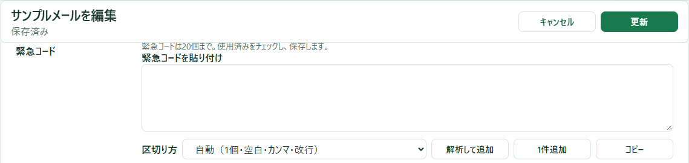
2コードを貼り付ける
編集画面の［緊急コードを貼り付け］に入力します。この例は1行に1コードです。
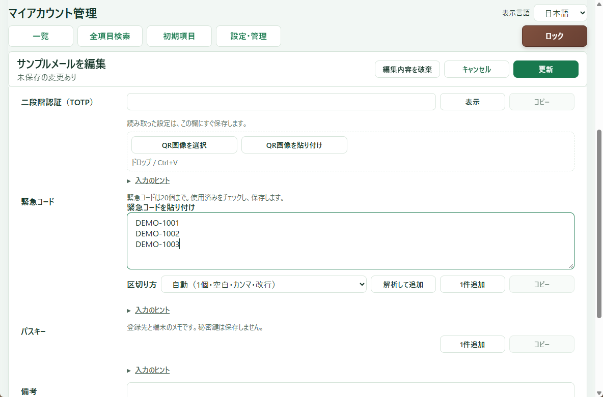
3［解析して追加］を押す
区切り方を確認して解析します。この例は［自動］です。
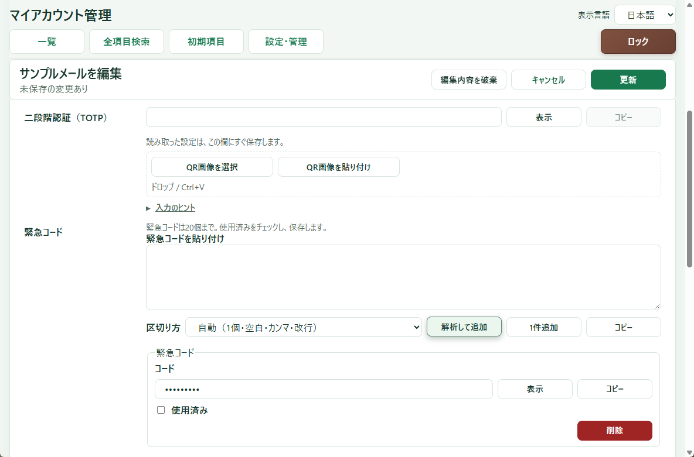
4候補を確認して［更新］する
下へスクロールして候補を確認します。必要な使用状態を指定してから、画面上部の［更新］で保存します。
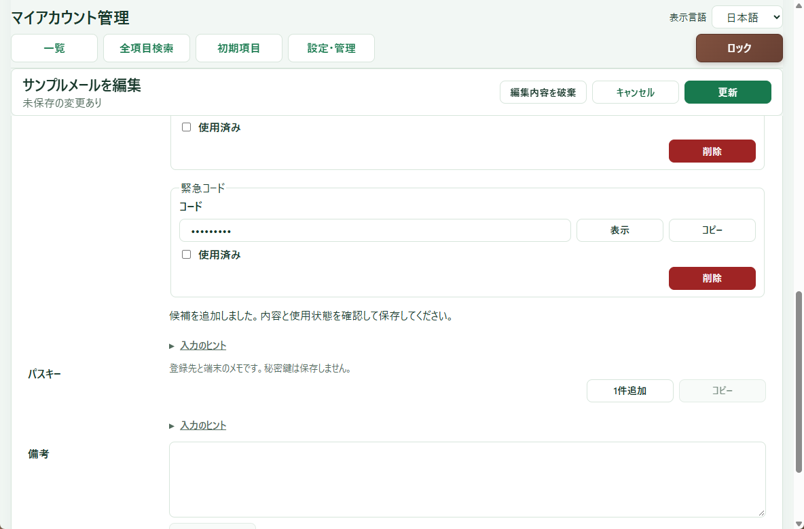
5保存の完了を確認
「アカウントを保存しました。」を確認します。
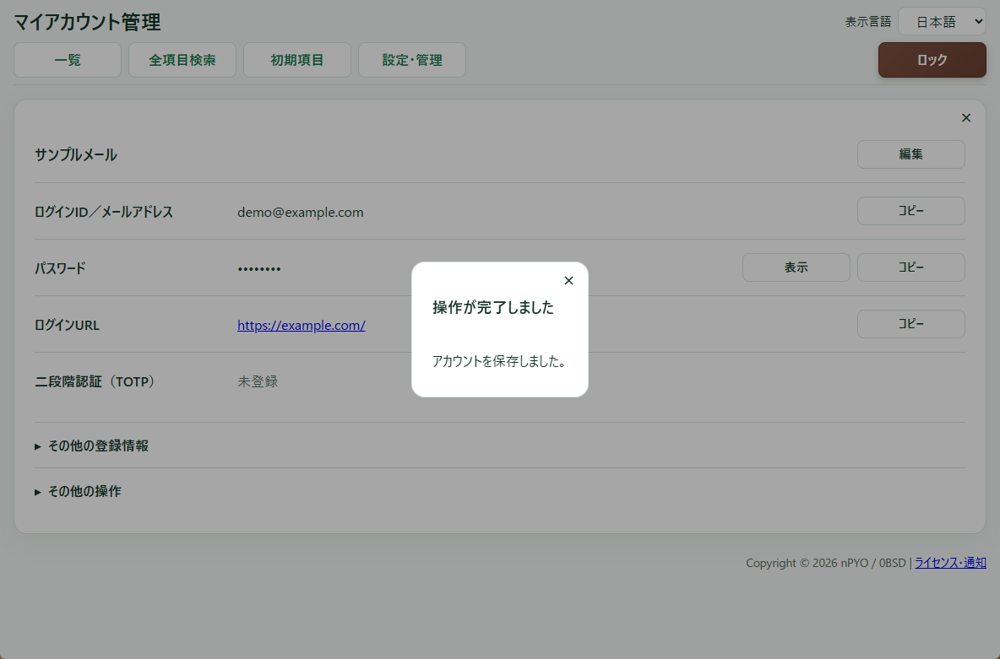
6保存したコードを見る
詳細で［その他の登録情報］を開き、緊急コードの［表示］を押します。
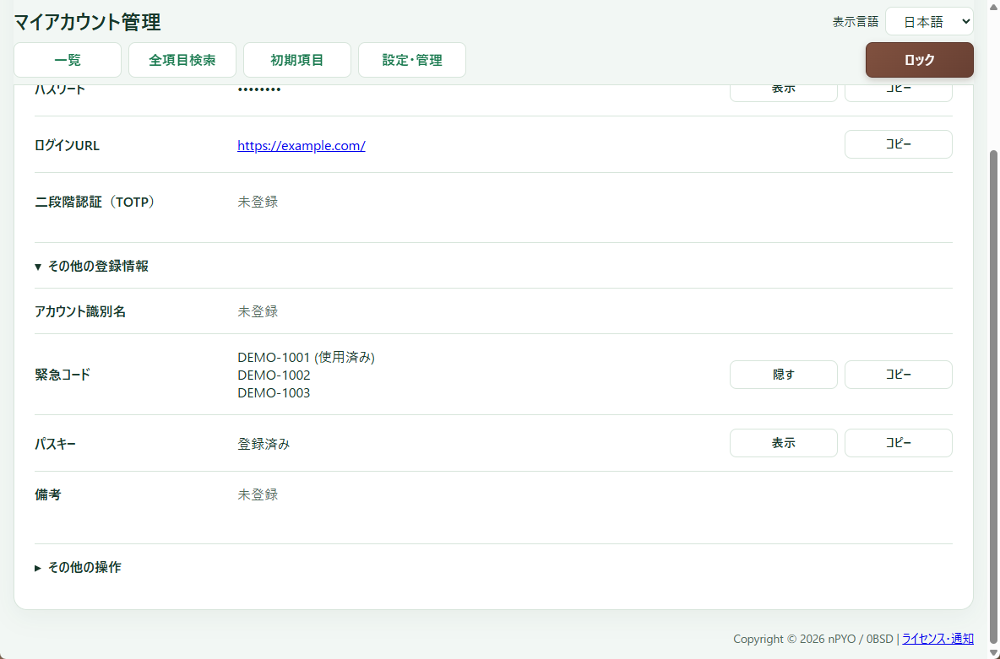
1件ずつ追加
71件ずつ追加する場合
ここからは別アカウントの例です。2件登録済みのコード操作サンプルを編集し、緊急コードの［1件追加］を押します。
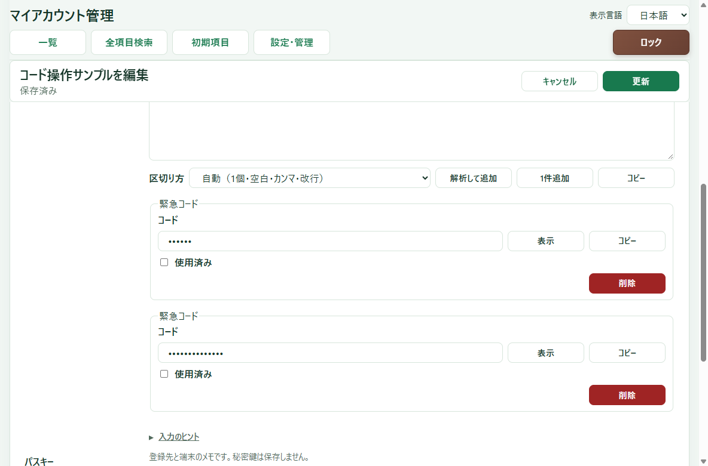
8追加された空欄を確認
下へスクロールして、新しく増えたコード欄を確認します。
9追加したコードを入力
新しいコードを入力します。内容は伏字になります。
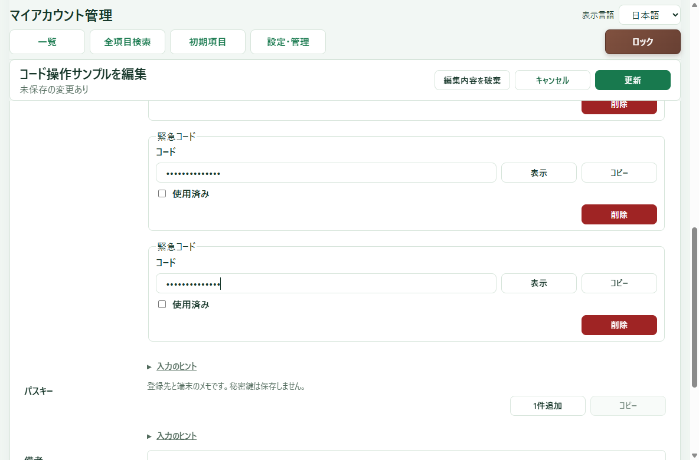
10［更新］して保存
画面上部の［更新］を押します。

11追加分を詳細で確認
［その他の登録情報］を開き、緊急コードの［表示］を押します。
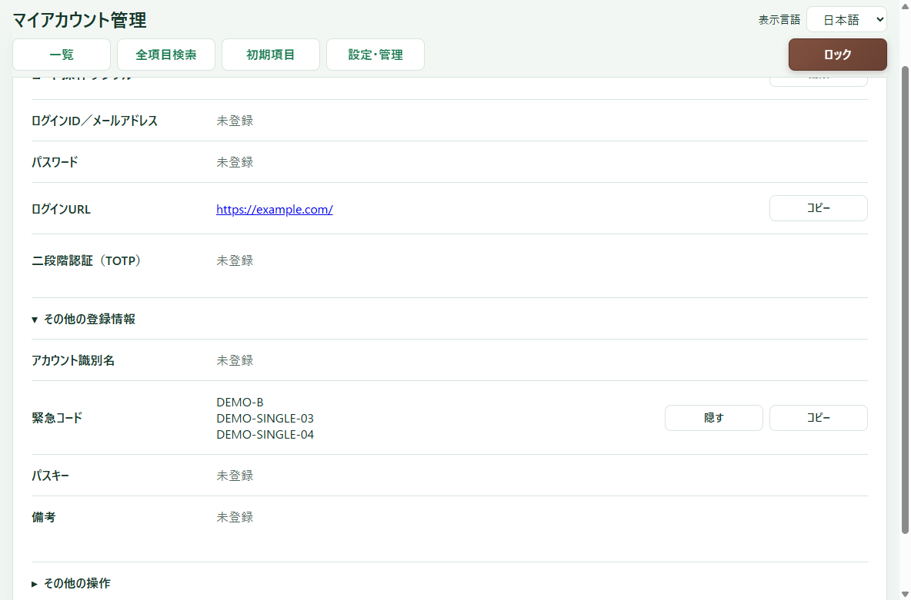
カンマで区切って追加
12カンマで区切る場合
別の例です。コードをカンマで並べ、［区切り方］を［カンマ区切り］にします。
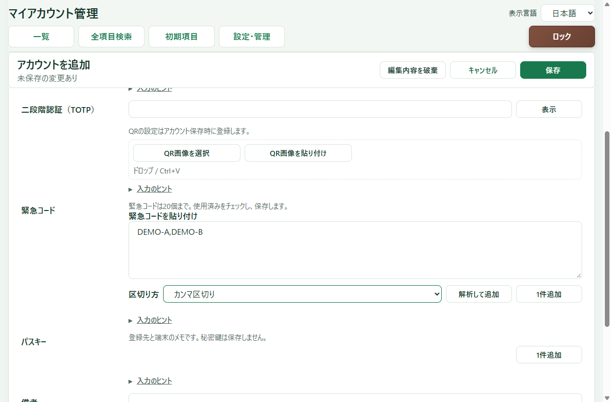
13［解析して追加］を押す
貼り付け欄が空になり、個別のコード欄ができます。
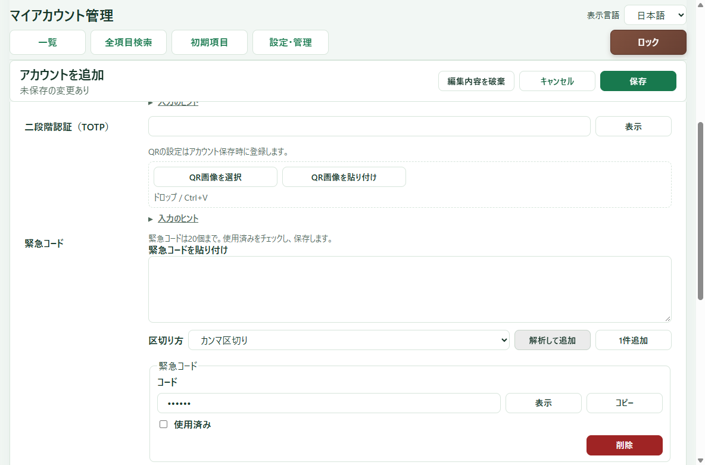
142件に分かれたことを確認
下へスクロールし、候補の件数・内容・使用状態を確認します。
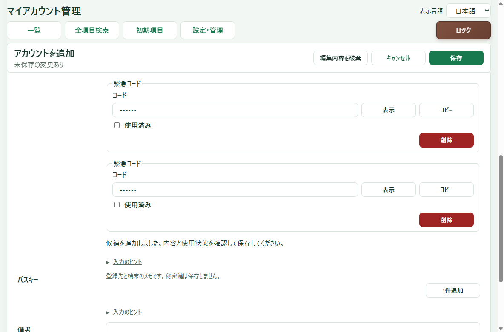
15新規登録を保存
新規登録では上部の［保存］を押します。
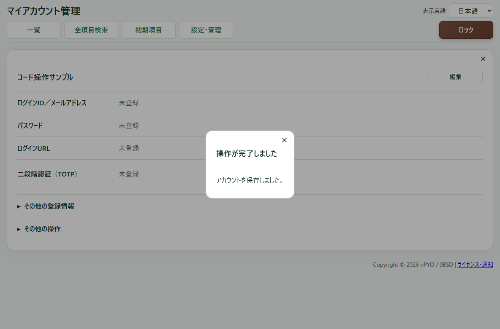